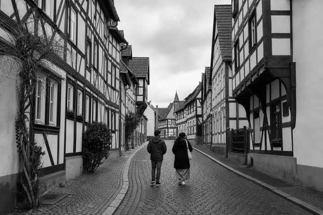
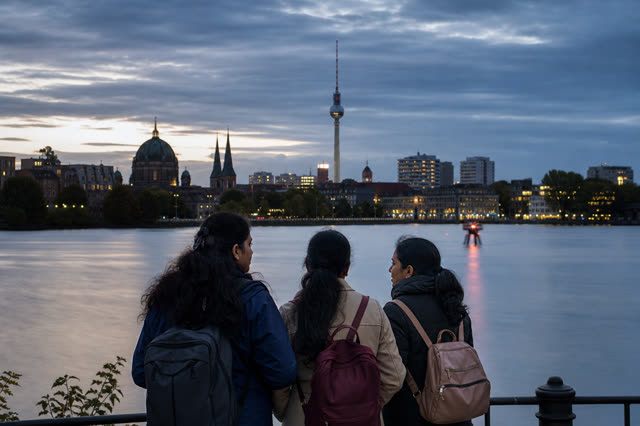

3.1
Ethical recruitment
Student welfare comes before placement numbers. Our process is built on honesty about requirements, timelines and outcomes.
Nursing Ausbildung · Sri Lanka → Germany
CGP prepares Sri Lankan youth for Nursing Ausbildung in Germany - with German language training, cultural and professional preparation, and guidance that continues after you arrive.
Structured preparation German language, culture and professional readiness before departure.
Language first Structured German training from A1 towards B2 before you fly.
Long-term cooperation Sustainable partnership with German Ausbildung providers and healthcare institutions.
We don't just recruit students. We prepare them - and stay with them.
Ceylon German Pathway is a Sri Lankan organisation based in Wilimbula, Henegama, serving students and families nationwide. We help motivated young people prepare for Nursing Ausbildung - Germany's recognised vocational nursing training - and for professional healthcare careers in Germany.
Our work covers the entire journey: candidate identification, German language preparation, cultural and professional preparation, documentation, German partner interviews and selection, pre-departure preparation, and support after arrival in Germany.
Train. Earn. Build a profession.
Ausbildung is Germany's dual vocational training system: structured classroom study combined with paid, hands-on training inside a real healthcare institution.

Nursing Ausbildung is a state-recognised German vocational qualification. You graduate as a trained nursing professional within a regulated European healthcare system.
German hospitals, clinics and care institutions are actively seeking committed international nursing trainees - which is why CGP builds long-term partnerships with them.
Ausbildung trainees receive a monthly training allowance from their employer while they study and work - you build your career without paying university tuition fees.
A completed Ausbildung opens routes to continued employment, specialisation and further study within German healthcare - a career, not just a job placement.
3.1
Student welfare comes before placement numbers. Our process is built on honesty about requirements, timelines and outcomes.
3.2
Structured language training that prepares you for the levels German employers and authorities actually require.
3.3
Practical preparation for German workplace culture, professional expectations and everyday life - before you leave Sri Lanka.
3.4
We guide every application, document and visa step - so you're never stuck wondering what comes next.
3.5
We coordinate interviews with German healthcare institutions and prepare you thoroughly for them.
3.6
Pre-departure orientation, arrival support and integration support in Germany. Our responsibility doesn't end at the airport.
"When a student chooses CGP, they're choosing trusted, transparent guidance and continuous personal support throughout their journey to Germany."
- The CGP commitment
One clear route, mapped from your first question to your first day in Germany. Drag or use the arrows to follow it.
01
Talk to us on WhatsApp or by email. We explain the pathway, requirements, fees and realistic timelines.
02
We review your eligibility, motivation and goals to confirm Nursing Ausbildung is the right route for you.
03
Structured coursework building from beginner level towards the proficiency German employers require.
04
We prepare your applications and documentation correctly, completely and on time.
05
We coordinate interviews with German healthcare institutions and prepare you for each one.
06
Step-by-step guidance through the German visa process, with your documents in order.
07
Practical preparation for life in Germany: culture, workplace expectations, and what to expect on arrival.
08
Arrival support and ongoing integration support in Germany. We stay in touch as you settle into training.

Prepared candidates. Reliable partnership.
CGP works with German hospitals, clinics and care institutions as a long-term partner - not a one-off recruiter. We select motivated Sri Lankan candidates and prepare them properly before they ever sit in front of your interview panel.
Real students. Visible progress.
Trust is built on evidence. This board tracks where CGP students currently stand on the pathway - from the language classroom in Sri Lanka to training wards in Germany.
50+
Students currently in preparation
Students working through structured German coursework and healthcare career preparation at CGP, building from beginner level towards employer-ready proficiency.

Not yet published
Candidates in interview & matching
Candidates whose documents are complete and who are being coordinated with German healthcare institutions for employer interviews.
Not yet published
Students in the visa process
Students with confirmed training positions, now preparing visa applications and pre-departure orientation with CGP guidance.
25+
Successful placements
Students who have arrived in Germany and begun their Nursing Ausbildung, with CGP integration support continuing on the ground.

Counts shown are working placeholders. Verified student numbers, progress updates and testimonials will be published here as they are confirmed.
Bereit? Message us today.